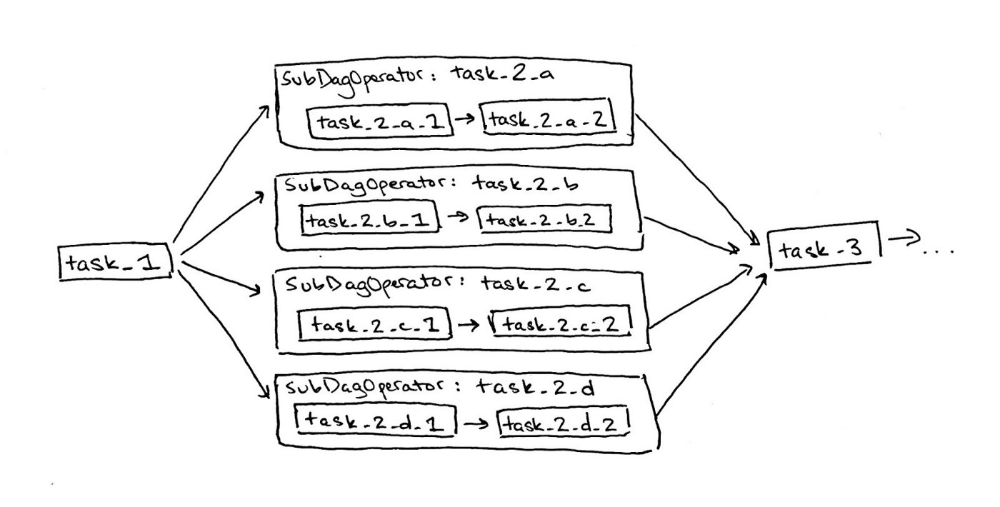

Airflow: Why is nothing working?
TL;DR Airflow’s SubDagOperator causes deadlocks.
At Bluecore, we love data. Our products rely on crunching lots of data to help our eCommerce customers provide personalized experiences through email, advertising, and customized on-site experiences. As we continue to add more products, we have had an increasing number of ways to manage data processing workflows. Instead of maintaining N different systems to control our data workflows, we want to consolidate our data processing onto a single platform.
As Simple As Possible, As Powerful as Necessary is a cultural maxim at Bluecore engineering. In the early days of our product evolution, we built a composable ETL system for linear data processing workflows. That no longer scaled for our newer data products, and thus we decided to introduce Airflow, “a platform to programmatically author, schedule and monitor workflows,” created by Airbnb. In this post I’m not going to write about what Airflow is, its basic concepts, or why you might want to use it. Airflow’s own documentation does a great job of covering this, and there are a growing number of posts that give examples for those new to Airflow. Instead, I’m going to write about a specific blocker my teammates and I hit when we decided to start running production jobs for a project, Project X, through Airflow.
We set up a basic Airflow environment that runs on a Kubernetes cluster and uses Celery workers to process tasks. Project X requires a workflow be run per customer. To do this in Airflow, we created a Project X DAG for each customer. A DAG, Directed Acyclic Graph, defines a workflow in Airflow. Here is a simplified version of Project X’s DAG:
We vetted this for production like everyone does: we ran one customer’s DAG, it worked, we ran two customers’ DAGs, they both worked, it’s production ready! We were feeling confident about our environment, our DAGs, and our Airflow knowledge, so we began running hundreds of production Project X DAGs through Airflow. And nothing worked.
We had kicked off the DAGs through the Airflow UI and saw the workers start processing tasks. Since we knew the DAGs would likely take a few hours, we moved on to other work while (we hoped) they would complete in the meantime. But when we checked a few hours later, we found that the workers had barely made any progress at all.
We were surprised and decided to try the simplest solution: throw more resources at the problem. We added more workers to our Kubernetes cluster and upped the concurrent task limit. With somewhat reduced confidence, we reset the environment and kicked everything off again. And still, nothing worked.
At this point, our previous confidence had disappeared. Unable to pinpoint the issue from our initial understanding of Airflow, Kubernetes, Celery workers, etc., we set off to hunt through what clues the broken environment could give us.
In our initial debugging, we found two symptoms of our mystery issue:
Thinking that the first symptom might be causing the second, we searched for the cause of the evicted Kubernetes pods. Luckily, Googling ‘workers evicted Airflow Kubernetes’ lead us to helpful Kubernetes documentation and other Medium posts.
The problem was that we were not specifying memory resources for containers running our Airflow code on Kubernetes. Without specifying that processes from container X required Y amount of memory to run, Kubernetes would schedule these processes to run on any available machine, including ones with less than Y memory available!
Because our containers were continuously trying to use more memory than was available, our Kubernetes pods were continuously being evicted. This is expected behavior as per Kubernetes’ documentation.
Fun debugging side-note: our quick-and-dirty solution from earlier to increase the limit of concurrent tasks for the workers actually exacerbated the proble ! By increasing the number of concurrent tasks without specifying memory resources, the scheduler was scheduling even more processes to run on Kubernetes machines without the necessary available memory.
To fix this issue, we specified memory resources in our Kubernetes configuration. We applied the updated configuration to our cluster, reset the Airflow environment, and tried to run the DAGs again. We were happy to see that our workers were no longer being evicted by Kubernetes. On to the second symptom!
Sadly, the Celery workers were still processing tasks that were never completing. So we searched through Airflow documentation, Celery documentation, Kubernetes documentation, and logs. This is when we took very good advice from a teammate: step back, simplify, and try again.
We scaled down to just one worker running with a limit of 32 concurrent tasks. We kicked off one DAG, hoping to hit the same issue in this simplified environment. Luckily, we did.
Fun debugging side-note: You read earlier that we tested two DAGs successfully in production, which is why we felt confident moving everything over. Now I’m saying just one DAG broke the environment. What’s up? In the original environment, we had multiple workers and a much larger number of available concurrent tasks. While we technically should have hit the same issue, we basically just got lucky. Bugs are fun!
We found that at the point when the Celery workers stopped completing running tasks, each of the running tasks were instances of Airflow’s SubDagOperator.
For those less familiar with Airflow Operators, the SubDagOperator is a native Operator that allows you to use a task in a DAG to kick off an entirely separate child DAG. The parent DAG must wait for the entire child DAG to finish processing in order to move on to the next task. So the SubDagOperator task is occupying a worker’s execution slot and is waiting for a child DAG to finish. The child DAG can’t finish (or even start!) because it is waiting for an available execution slot. Deadlock!
Now that we had diagnosed the problem, Googling `Airflow SubDagOperator deadlock` quickly confirmed that other people were also experiencing deadlocks using SubDagOperator.
We replaced all instances of SubDagOperator with a new custom Operator. This Operator performs the same tasks as the previous SubDagOperator, but all inside of a single task. We confirmed the fix by running the updated DAGs, and finally…
Everything worked!
Even though it took a few people a few days to dig in, debug, and solve this specific issue, we still think Airflow is a good choice for managing Product X’s workflow. However, this issue did highlight that there will always be different problems at scale (and in production) than in a development environment. The best thing that you can do is understand the system so you know how to debug when the time comes. But in the meantime, don’t use SubDagOperators!
Thoughts? Questions? Praise? Let me know on Twitter!